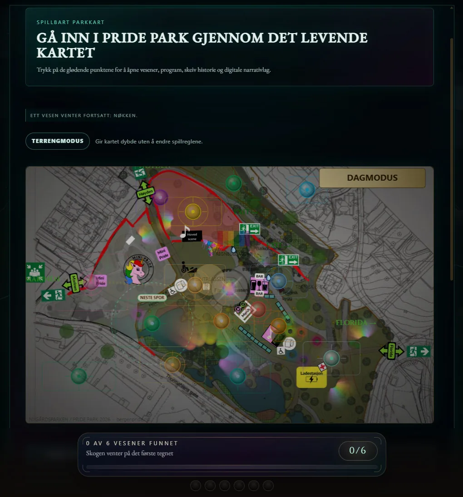
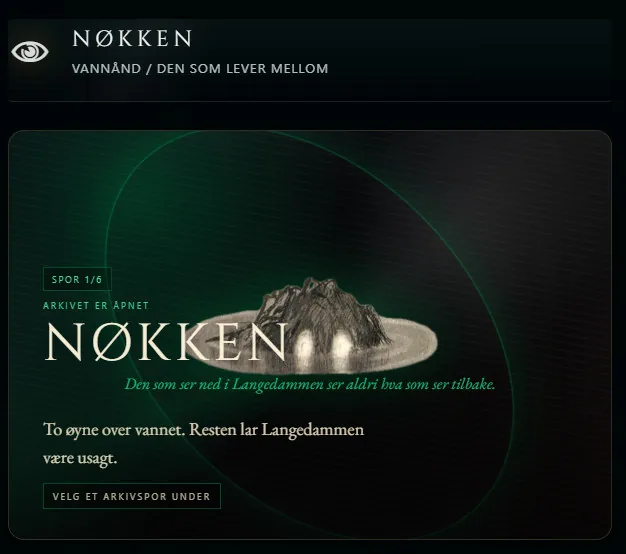
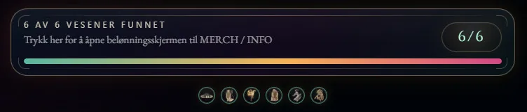
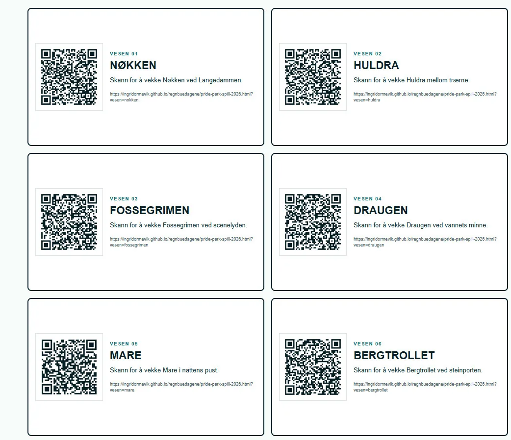
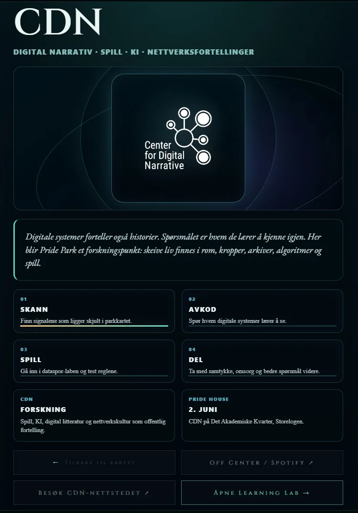
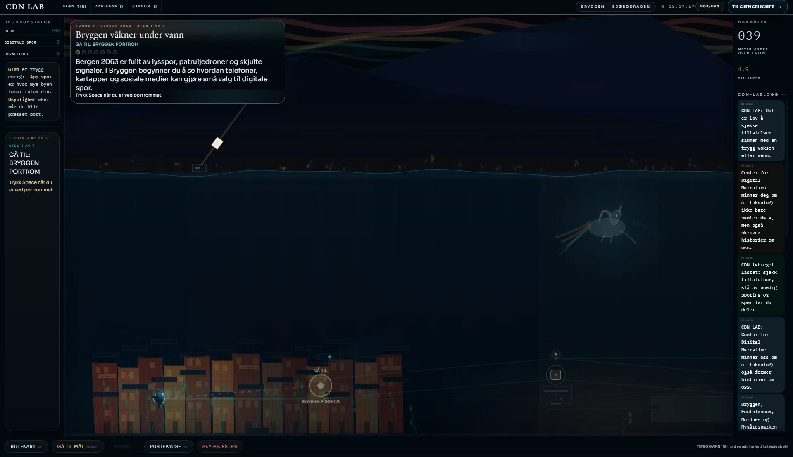
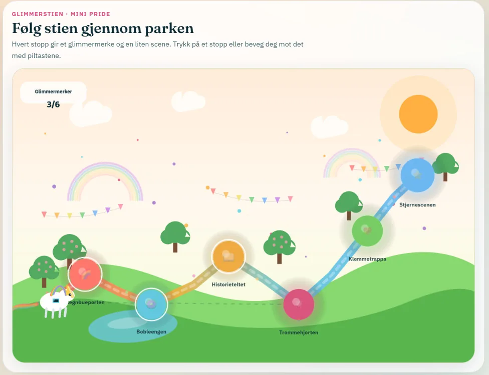
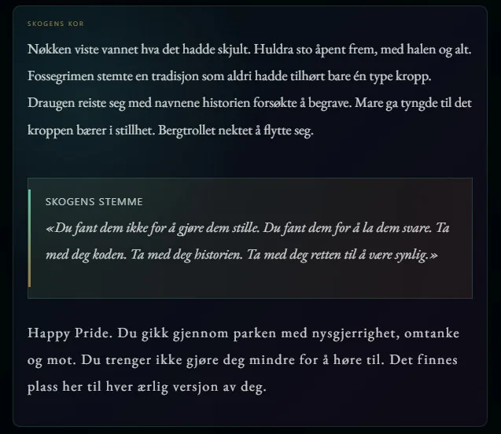

Pride Park 2026
Et spill der ingen kan tape, monsteret ikke bekjempes, og progresjon måles i hvor våken skogen har blitt.
Parken blir et spillbrett
Telefonen vibrerer i hånden. En QR-kode festet til et tre i Nygårdsparken er scannet, og Nøkken trer frem på skjermen. Spilleren leser om vannet, om skjulte møter og om skeive liv som lenge måtte bevege seg gjennom Bergen uten å bli for synlige. Ingenting er vunnet i klassisk forstand. Men noe har våknet.

Pride Park 2026 er et nettleserbasert HTML5-spill der Nygårdsparken, Pride House, Mini Pride og Centre for Digital Narrative samles i ett digitalt kartgrensesnitt. Spilleren finner seks vesener fra norsk folketro og leser dem som skeive arkivnoder.
Skeive har lenge blitt fortalt at de er vesenene i skogen: farlige, uleselige, bedre gjemt. Spillet kjemper ikke mot denne innrammingen. Det bebor den.
Monsteret gjenkjennes
De seks vesenene fungerer som noder i et skeivt arkiv, ikke som boss encounters. Nøkken bærer vannet og de skjulte møtene. Huldra bærer synlighet og lesbarhet. Fossegrimen kobler kunst, lyd og kropp. Draugen bærer minner som ikke lar seg begrave. Mare gjør nattens trykk spillbart. Bergtrollet peker mot Bergens tidlige organiserte homobevegelse.

Hva skjer når et spill bytter ut seier, tap og mestring med oppdagelse, gjenkjennelse og tilhørighet?
Skogen våkner i koden
CSS-variabelen --forest-awake er spillets poetiske maskin. Den stiger fra null til én når vesener oppdages og modulerer grensesnittets atmosfære. En tallverdi blir til skogens stemning. Progresjon er ikke poengsum, men atmosfære.

Reading Ritual lagrer spillerens tolkning i nettleseren. Valget endrer ikke arkivets fakta, men det endrer hvordan skogen husker stien gjennom dem.
Reglene ligger i verden
Spillets regelstruktur ligger ikke bare i teksten eller JavaScriptet. Den ligger i QR-punktene, mobilskjermen, Nygårdsparken og kroppen som beveger seg gjennom den. Når en spiller scanner en kode og kjenner telefonen vibrere, befinner hun seg samtidig i spillet og i Bergens skeive geografi.

Haptikken eskalerer fra et kort pulsmønster ved første funn til en lengre ritualsekvens ved det sjette. Der vibrasjon ikke støttes, skifter responsen modalitet: visuell puls og tekstlig bekreftelse tar over. Tilgjengelighet er ikke et tillegg til argumentet. Det er argumentet i kjørbar form.
Fra skog til nettverk
Inne i kartet ligger Centre for Digital Narrative som en spillbar forskningsnode. Digitale narrativer, queer gaming, queer AI, data og overvåkning blir ikke forklart utenfra; de blir handlingsrom spilleren må navigere.


WHERE THE FOREST MEETS THE NETWORK / roots · nodes · signal · memory.
Det digitale og det mytologiske er ikke to separate lag. De er det samme systemet beskrevet i to språk.
Tilhørighet som handling
Mini Pride er ikke en sidesone, men en annen form for skeiv omsorg. I kartet står Glimmerstien på lik linje med vesenene og forskningsnodene. Spillet sier dermed at skeiv tilhørighet ikke bare er natt, kropp og transgresjon, men også trygghet, lek og fremtid.

Pride Park begynte med et kart over en park og endte med et argument om hvem som får lov til å eksistere i kulturen. Vesenene blir ikke beseiret, men funnet. Monsteret markerer ikke trussel, men peker mot steder der fellesskapet allerede finnes.

Happy Pride. Du gikk gjennom parken med nysgjerrighet, omtanke og mot. Du trenger ikke gjøre deg mindre for å høre til. Det finnes plass her til hver ærlig versjon av deg.